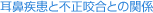
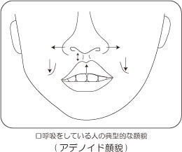
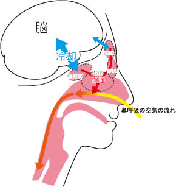
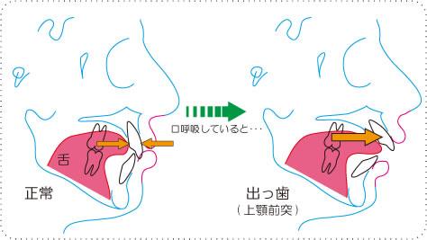

指定自立支援医療機関（育成医療・更生医療） 顎口腔機能診断医療機関


こんなお顔をしていませんか？お鼻で呼吸（鼻呼吸）できず、口で呼吸（口呼吸）をしていると、下の写真のような感じの口元になってしまいます。

＜特徴＞
口がポカンとあいている（口唇閉鎖不全）
上唇は平らではなく山のようにつり上がっている
鼻と上唇との間（人中といいます）の発育不足
鼻はややヨコに開いている

このようなお顔のお子さんは、出っ歯さん（上顎前突）の患者さんに多く見られます。正常な鼻呼吸によって吸われた空気は副鼻腔などで加湿され、気道の組織が守られます。また、副鼻腔のすぐ上には脳が存在し、その冷却機能を補っています。口呼吸によって脳下垂体の冷却が弱まり、脳内温度が上昇するため、風邪で熱が出ているのと同じ状態になり、集中力が低下する原因の一つになります。その結果、ボケーっとしている時間が多くなると思われます。また、口呼吸によって口の中が乾燥するため、虫歯や歯周病や口臭の原因となります。さらに気道の乾燥によって、風邪やインフルエンザなどの病気に感染しやすくなります。
さらに、口呼吸では口が開いた状態なので、前歯が前に出やすいため出っ歯になり、それによってお口が閉じられないという悪循環が始まります。当然、その結果、口呼吸の特徴に書いたような図のようなお顔になっていきます。このように口呼吸によっても歯列不正や、顎骨（上下のアゴの骨）の発育にも影響が表れます。

当院では、CT（コーンビームCT）を導入していますので、以下のことについて検査が可能です。矯正治療の通常の検査では、いままでわからなかったことがCTの導入により明らかになってきております。
- 1） 鼻中隔の弯曲のチェック
- 2） アレルギー性鼻炎などによる下鼻甲介の肥厚のチェック
- 3） 副鼻腔に関するチェック
I 上顎洞 II 篩骨洞 III 前頭洞 IV 蝶形骨洞 - 4） 扁桃のチェック
I 咽頭扁桃（アデノイド） II 口蓋扁桃
以上の4項目は口呼吸の原因を生み出す要因です。これらに異常が認められると専門の耳鼻咽喉科に治療を依頼することになります。